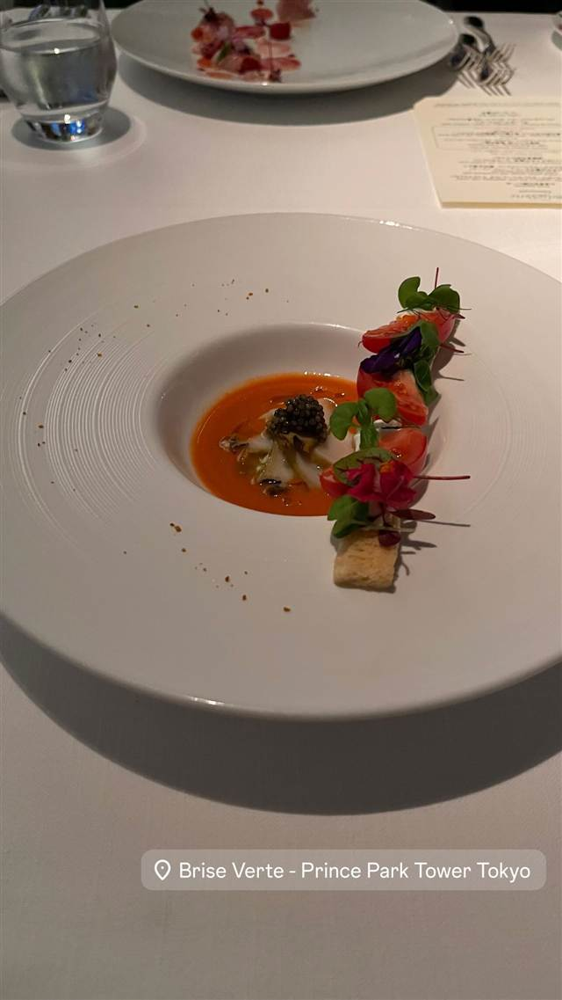
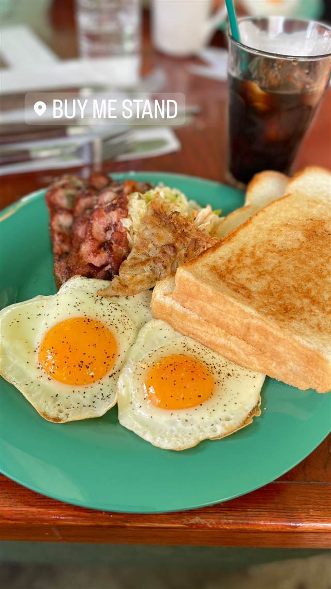

フレンチ · フレンチ · 芝公園
Private Dining Brise Verte（ブリーズヴェール）
六本木からお台場まで一望する180度パノラマの本格フレンチ
Brise Verte - Prince Park Tower Tokyo
ザ・プリンス パークタワー東京33階にある「Brise Verte（ブリーズヴェール）」は、六本木からお台場までを見渡す180度パノラマビューが自慢の本格フレンチレストラン。国際コンクール入賞歴を持つ総料理長・茂手木了氏の料理と、専属ソムリエが選ぶワインを楽しめる。
TRIVIA
豆知識
- 総料理長はフランス三大料理コンクールの一つに日本代表として出場した実力者
- 六本木からお台場まで見渡せる180度パノラマビューの中で食事ができる
REVIEWS
世間の評判
3.51食べログ
東京タワーを望む夜景と特別感
- 33階からの眺望と特別な雰囲気を高く評価する声が多い
- フレンチ料理の見た目の美しさと上品な盛り付けを評価する声がある
- 特別な日に選ばれる一方、価格の割に量が少ないと感じる人もいる
食べログ 口コミ331件
| 看板 | 本格フレンチのコース料理 |
|---|---|
| こだわり | 総料理長がコンクール実績を持つ本格フレンチとワインを提供。専属ソムリエが料理に合うワインを提案する。 |
| 掲載・評価 | 総料理長がフランス料理の国際コンクールで入賞・日本代表歴あり。 |
| どこから | 都心 |
| 場所 | 赤羽橋 東京都港区芝公園4-8-1 ザ・プリンス パークタワー東京 33F |
| メモ | ザ・プリンス パークタワー東京33階。六本木からお台場まで180度のパノラマビューが望める。 |
食べたもの：フレンチ前菜
OFFICIAL
店からの知らせ
NEARBY
近い店・同じ系統の店
-
 フレンチ 北品川
カンテサンス（Quintessence）
2007年から守り続けるミシュラン三つ星、おまかせコースのみ
夜 ¥30,000～¥39,999
フレンチ 北品川
カンテサンス（Quintessence）
2007年から守り続けるミシュラン三つ星、おまかせコースのみ
夜 ¥30,000～¥39,999
-
 フレンチ 代官山
TACUBO（タクボ）
暖炉の薪火で焼き上げる肉料理が看板の隠れ家イタリアン
夜 ¥40,000～¥49,999
フレンチ 代官山
TACUBO（タクボ）
暖炉の薪火で焼き上げる肉料理が看板の隠れ家イタリアン
夜 ¥40,000～¥49,999
-
 フレンチ 浅草
Nabeno-Ism（レストラン ナベノイズム）
頭のNを隠すと『あべの』になる店名のフレンチコース
昼 ¥20,000～¥29,999 夜 ¥40,000～¥49,999
フレンチ 浅草
Nabeno-Ism（レストラン ナベノイズム）
頭のNを隠すと『あべの』になる店名のフレンチコース
昼 ¥20,000～¥29,999 夜 ¥40,000～¥49,999
-
 フレンチ 表参道
crisscross（クリスクロス）
緑豊かなテラス席で味わうパンケーキとフレンチトースト
昼 ¥1,000～¥1,999 夜 ¥2,000～¥2,999
フレンチ 表参道
crisscross（クリスクロス）
緑豊かなテラス席で味わうパンケーキとフレンチトースト
昼 ¥1,000～¥1,999 夜 ¥2,000～¥2,999
-
 フレンチ 美栄橋駅
和琉料理 さりぃ
北海道仕込みの店主が沖縄食材で仕立てる和琉コース
夜 ¥8,000～¥9,999
フレンチ 美栄橋駅
和琉料理 さりぃ
北海道仕込みの店主が沖縄食材で仕立てる和琉コース
夜 ¥8,000～¥9,999
-

フレンチ 渋谷 BUY ME STAND ニューヨーク仕込みのグリルドチーズサンド専門店 昼 ¥1,000～¥1,999 夜 ¥1,000～¥1,999
ONSEN & SAUNA